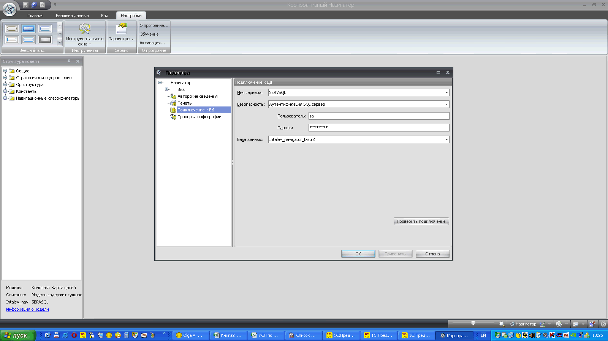

Справку смотреть в файле \\Servsh\Shared\АСУ\Инталев\Intalev_Navigator_Doc\corporatenavigator.installation.guide.ru.pdf
Расшарить папку на комп. польз. скопировать туда необх. файлы.
Установку делать из InstallerWithoutSQL так как у нас сетовой вариант.
В процесе установки не выбирать запуск программы. После установки создать в катталоге "Инталев" папку "Liс" и поместить туда файл лицензии. Скопировать в папку с файлами файл Workbench.exe.config, предварительно переименовав оригинал, и прописать доступ к инету. Запустить прогу, зайти в настройки и настроить, перезапустить. Доустановить одну из трех библ. согласно лицензии.
Не забыть СКОПИРОВАТЬ КОД, удалить подключение к инету и все файлы установки.
